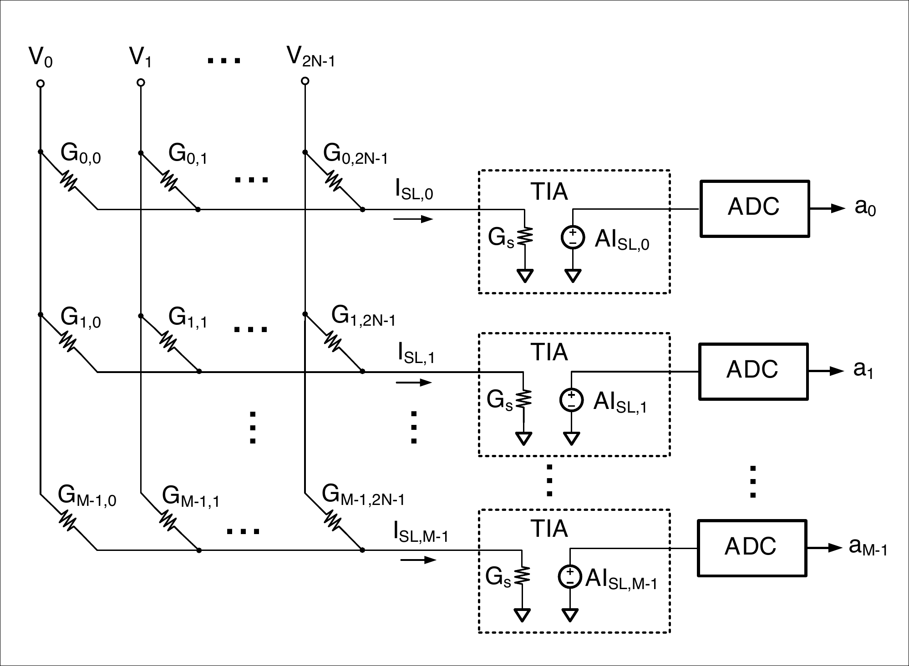

Architecture
Perpendicular lines create a shared array current.
Voltage DACs drive the bit-lines while each source-line current passes through a transimpedance amplifier and ADC. The sensing resistance connects the analog array to the available conversion range.
Signal and noise
The design variable sits between the array and ADC.
- Signal path. The sensing resistance, modeled as the TIA input impedance, scales the source-line current reaching the readout.
- Noise path. The reported compute-SNR model includes DAC mismatch, bitcell conductance variation, ADC clipping, and ADC quantization.
- Design target. Select the sensing resistance that maximizes total compute SNR for the chosen device and N.
